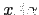
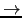

Sig: Análisis Sintáctico Predictivo Recursivo Sup: Analizadores Descendentes Predictivos en Ant: Analizadores Descendentes Predictivos en Con:
Se admite que
 , donde
, donde  denota la palabra vacía, esto es
la palabra que tiene longitud cero, formada por cero símbolos del conjunto base .
denota la palabra vacía, esto es
la palabra que tiene longitud cero, formada por cero símbolos del conjunto base .
Esto es, el lenguaje generado por la gramática  esta formado por las cadenas
de terminales que pueden ser derivados desde el símbolo de arranque.
esta formado por las cadenas
de terminales que pueden ser derivados desde el símbolo de arranque.
Una derivación
en la cual en cada paso
 la regla de producción aplicada
la regla de producción aplicada
 se aplica en la variable sintáctica mas a la derecha se dice una derivación a derechas
se aplica en la variable sintáctica mas a la derecha se dice una derivación a derechas
Una derivación
en la cual en cada paso
 la regla de producción aplicada
 se aplica en la variable sintáctica mas a la izquierda se dice una derivación a izquierdas
se aplica en la variable sintáctica mas a la izquierda se dice una derivación a izquierdas
| program
 declarations statements |
| declarations
declaration ';' declarations |
| declaration
INT idlist |
| statements
statement ';' statements |
| statement
ID '=' expression |
| expression
term '+' expression |
| term
factor '*' term |
| factor
'(' expression ')' |
| idlist
ID ',' idlist |
En esta gramática,  esta formado por los caracteres entre comillas simples y
los símbolos cuyos identificadores están en mayúsculas. Los restantes identificadores
corresponden a elementos de
esta formado por los caracteres entre comillas simples y
los símbolos cuyos identificadores están en mayúsculas. Los restantes identificadores
corresponden a elementos de  . El símbolo de arranque es
. El símbolo de arranque es  program.
program.
Conteste a las siguientes cuestiones: